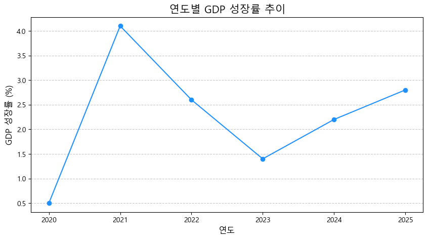

#for 임시변수 in 순회가능객체(예: 리스트):
# 순회가능객체의 각 요소에 대해 반복 실행될 코드 블록
# 이 블록 안에서는 '임시변수'를 통해 현재 요소를 사용할 수 있음
# ★★★ 이 부분도 반드시 들여쓰기! ★★★
# 반복문이 모두 끝나고 실행될 코드4 4주차: 반복 작업은 컴퓨터에게! (반복문 for 와 리스트 활용)
강의 개요:
지난 시간에는 조건문(if, elif, else)을 사용하여 프로그램이 특정 조건에 따라 다른 경로로 실행되도록 제어하는 방법을 배웠습니다. 이를 통해 리스트나 딕셔너리에 저장된 개별 데이터에 대해 판단을 내릴 수 있었죠.
하지만 만약 리스트에 담긴 모든 국가의 GDP 성장률을 하나씩 확인하거나, 1년치(12개월) 월별 매출 데이터의 합계를 구하거나, 특정 조건을 만족하는 모든 항목을 찾아내는 작업을 하려면 어떻게 해야 할까요? 조건문만으로는 이런 반복적인 작업을 효율적으로 처리하기 어렵습니다. 100개 국가 데이터가 있다면 if문을 100번 써야 할까요? 그건 너무 비효율적이겠죠.
이번 주에는 바로 이러한 반복 작업을 자동화하는 강력한 도구인 반복문(Loop), 그중에서도 for 반복문에 대해 집중적으로 배웁니다. for 반복문을 사용하면 리스트와 같은 순서열(sequence) 자료 구조의 모든 항목을 하나씩 꺼내어 동일한 작업을 반복 수행할 수 있습니다. 또한, range() 함수와 함께 사용하여 특정 횟수만큼 코드를 반복 실행하는 방법도 배울 것입니다. 반복문은 대량의 데이터를 처리하고 분석하는 데 필수적이므로, 오늘 내용을 잘 익혀두시기 바랍니다.
이번 시간 학습 목표:
- 반복문이 왜 필요한지 이해하고, 반복적인 작업을 자동화하는 것의 이점을 설명할 수 있습니다.
for반복문의 기본 구조(for 변수 in 순회가능객체:)를 이해하고, 리스트의 모든 요소를 순회하며 작업을 수행하는 코드를 작성할 수 있습니다. (들여쓰기 중요!)- 반복문 내에서 계산(합계, 평균 등)을 수행하거나, 조건문(
if)을 사용하여 특정 조건의 요소만 처리(필터링, 카운팅)할 수 있습니다. range()함수를 사용하여 특정 횟수만큼 코드를 반복 실행하는 방법을 이해하고 활용할 수 있습니다.- (맛보기) 리스트 데이터와 반복 처리 개념이 어떻게 시계열 데이터 시각화로 이어지는지 이해합니다.
4.1 1. 왜 ’반복문’이 필요할까요? : 반복 작업의 자동화
다음과 같은 상황을 생각해 봅시다.
- 경제 데이터: 1960년부터 2023년까지 한국의 연도별 GDP 리스트가 있을 때, 각 연도의 GDP를 출력하고 전체 기간의 평균 GDP를 계산하고 싶다.
- 회계 데이터: 어떤 회사의 12개월치 월별 매출액 리스트가 있을 때, 각 월의 매출액을 확인하고 연간 총 매출액을 구하고 싶다.
- 금융 데이터: 포트폴리오에 담긴 모든 주식의 현재 가격을 가져와 평가 손익을 계산하고 싶다.
이런 작업들은 모두 ‘리스트(또는 다른 데이터 묶음)의 각 항목에 대해 동일한 처리(출력, 계산 누적 등)를 반복한다’ 는 공통점이 있습니다. 만약 데이터가 10개, 100개, 1000개로 늘어난다면, 이 작업을 손으로(즉, 코드를 복사-붙여넣기 해서) 반복하는 것은 거의 불가능하며 실수의 위험도 매우 큽니다.
반복문(Loop) 은 바로 이런 문제를 해결하기 위해 등장했습니다. 반복문은 특정 코드 블록을 여러 번 자동으로 실행해 주므로, 우리는 반복될 작업 내용만 한 번 정의하면 됩니다. 이를 통해 코드는 훨씬 간결해지고, 데이터 크기에 상관없이 동일한 로직을 적용할 수 있으며, 오류 발생 가능성도 줄어듭니다.
4.2 2. 리스트 속 친구들을 하나씩 만나기: for 반복문 기초
파이썬에서 가장 흔하게 사용되는 반복문은 for 반복문입니다. for 반복문은 리스트, 문자열, 튜플 등 여러 개의 요소를 순서대로 담고 있는 객체(순회 가능한 객체, Iterable) 의 요소들을 처음부터 끝까지 하나씩 꺼내어 지정된 작업을 반복 수행합니다.
기본 구조:
구성 요소:
for키워드: 반복문의 시작을 알립니다.임시변수(Temporary Variable): 반복문이 실행될 때마다 순회가능객체에서 꺼내온 요소가 임시로 저장될 변수입니다. 변수 이름은 자유롭게 지을 수 있지만, 보통 요소의 의미를 나타내는 이름을 사용합니다 (예:countryincountries).in키워드:임시변수와순회가능객체를 연결하는 역할을 합니다.순회가능객체(Iterable): 리스트(list), 튜플(tuple), 문자열(str), 딕셔너리(dict),range()객체 등 여러 요소를 포함하고 있는 객체입니다. 오늘은 주로 리스트를 다룹니다.- 콜론(
:):for ... in ...끝에는 반드시 콜론을 붙입니다. - 들여쓰기된 코드 블록: 리스트의 각 요소에 대해 반복적으로 실행될 코드입니다. 이 블록 안에서
임시변수를 사용하여 현재 처리 중인 요소 값에 접근할 수 있습니다.
for 반복문 예제 (리스트 활용):
예제 1: 국가 이름 리스트 순회하며 출력하기
countries = ["대한민국", "미국", "중국", "일본", "독일"]
print("--- 주요 국가 목록 ---")
# countries 리스트의 각 요소를 하나씩 꺼내어 country 변수에 담아 아래 코드를 반복 실행
for country in countries:
# country 변수에는 반복마다 "대한민국", "미국", ... , "독일" 이 차례대로 담김
print(f"안녕하세요, {country}!")
print("--- 목록 출력 완료 ---")--- 주요 국가 목록 ---
안녕하세요, 대한민국!
안녕하세요, 미국!
안녕하세요, 중국!
안녕하세요, 일본!
안녕하세요, 독일!
--- 목록 출력 완료 ---위 코드는 countries 리스트의 첫 번째 요소 “대한민국”을 country 변수에 담아 print문을 실행하고, 다음 요소 “미국”을 country 변수에 담아 print문을 실행하고, … , 마지막 “독일”까지 반복한 후 종료됩니다.
예제 2: GDP 성장률 리스트 순회하며 값 확인 및 합계 계산
gdp_growth_rates = [0.5, 4.1, 2.6, 1.4, 2.2] # 단위: %
total_growth = 0.0 # 성장률 합계를 저장할 변수 초기화
print("--- 연도별 GDP 성장률 ---")
for rate in gdp_growth_rates:
# rate 변수에는 0.5, 4.1, 2.6, 1.4, 2.2 가 차례대로 담김
print(f"이번 연도 성장률: {rate}%")
total_growth = total_growth + rate # 각 연도 성장률을 total_growth에 누적하여 더함
# total_growth += rate 와 동일한 표현
# 반복문이 끝난 후 최종 결과 출력
print("\n--- 분석 결과 ---")
print(f"총 {len(gdp_growth_rates)} 년간의 누적 성장률 합계: {total_growth:.2f}%") # len() 함수는 리스트의 길이를 반환
# 평균 성장률 계산
if len(gdp_growth_rates) > 0:
average_growth = total_growth / len(gdp_growth_rates)
print(f"평균 성장률: {average_growth:.2f}%")
else:
print("데이터가 없어 평균 성장률을 계산할 수 없습니다.")--- 연도별 GDP 성장률 ---
이번 연도 성장률: 0.5%
이번 연도 성장률: 4.1%
이번 연도 성장률: 2.6%
이번 연도 성장률: 1.4%
이번 연도 성장률: 2.2%
--- 분석 결과 ---
총 5 년간의 누적 성장률 합계: 10.80%
평균 성장률: 2.16%예제 3: 반복문 안에서 조건문(if) 사용하기 (필터링, 카운팅)
반복문 코드 블록 안에서 if 문을 사용하여 특정 조건을 만족하는 요소에 대해서만 작업을 수행할 수 있습니다.
gdp_growth_rates = [0.5, 4.1, -0.8, 1.4, 2.2, 3.1] # 마이너스 성장과 고성장(3% 이상) 포함
positive_growth_count = 0 # 플러스 성장 횟수 카운트 변수
high_growth_years = [] # 고성장 연도의 성장률을 저장할 빈 리스트 (개념 소개)
print("--- 성장률 분석 ---")
for rate in gdp_growth_rates:
print(f"처리 중인 성장률: {rate}%")
# 조건 1: 플러스 성장(+)인 경우만 횟수 증가
if rate > 0:
print(" -> 플러스 성장입니다.")
positive_growth_count = positive_growth_count + 1 # 카운트 증가
# 조건 2: 3% 이상 고성장인 경우, 해당 성장률을 다른 리스트에 추가 (나중에 활용 가능)
if rate >= 3.0:
print(" -> 고성장입니다!")
high_growth_years.append(rate) # 리스트에 요소 추가
# 반복문 종료 후 결과 출력
print("\n--- 최종 분석 결과 ---")
print(f"총 {len(gdp_growth_rates)} 년 중 플러스(+) 성장 횟수: {positive_growth_count} 번")
print(f"고성장(3% 이상)을 기록한 성장률들: {high_growth_years}")--- 성장률 분석 ---
처리 중인 성장률: 0.5%
-> 플러스 성장입니다.
처리 중인 성장률: 4.1%
-> 플러스 성장입니다.
-> 고성장입니다!
처리 중인 성장률: -0.8%
처리 중인 성장률: 1.4%
-> 플러스 성장입니다.
처리 중인 성장률: 2.2%
-> 플러스 성장입니다.
처리 중인 성장률: 3.1%
-> 플러스 성장입니다.
-> 고성장입니다!
--- 최종 분석 결과 ---
총 6 년 중 플러스(+) 성장 횟수: 5 번
고성장(3% 이상)을 기록한 성장률들: [4.1, 3.1][실습 1] for 반복문과 리스트 연습
- 주가지수 리스트 출력:
stock_indices = ["KOSPI", "Dow Jones", "Nasdaq", "Nikkei 225"]리스트가 있습니다.for반복문을 사용하여 각 주가지수 이름을 한 줄에 하나씩 출력하세요. - 분기별 매출액 합계 및 평균 계산:
quarterly_revenue = [120.5, 135.2, 115.0, 150.0]리스트(단위: 억 원)가 있습니다.for반복문을 사용하여 네 분기 전체 매출액의 합계와 평균 매출액을 계산하고 출력하세요. - 목표 매출액 초과 분기 카운트: 위
quarterly_revenue리스트와revenue_target = 130.0(단위: 억 원) 목표액이 주어졌을 때,for반복문과if문을 사용하여 목표 매출액을 초과한 분기가 총 몇 번인지 계산하고 출력하세요.
# 실습 1-1: 주가지수 리스트 출력
stock_indices = ["KOSPI", "Dow Jones", "Nasdaq", "Nikkei 225"]
print("--- 주요 주가지수 ---")
for index_name in stock_indices:
print(index_name)--- 주요 주가지수 ---
KOSPI
Dow Jones
Nasdaq
Nikkei 225# 실습 1-2: 분기별 매출액 합계 및 평균 계산
quarterly_revenue = [120.5, 135.2, 115.0, 150.0] # 단위: 억 원
total_revenue = 0.0
num_quarters = len(quarterly_revenue)
for revenue in quarterly_revenue:
total_revenue += revenue # total_revenue = total_revenue + revenue
print(f"연간 총 매출액: {total_revenue:.2f} 억 원")
if num_quarters > 0:
average_revenue = total_revenue / num_quarters
print(f"평균 분기 매출액: {average_revenue:.2f} 억 원")
else:
print("매출 데이터가 없습니다.")연간 총 매출액: 520.70 억 원
평균 분기 매출액: 130.18 억 원# 실습 1-3: 목표 매출액 초과 분기 카운트
# quarterly_revenue = [120.5, 135.2, 115.0, 150.0] # 위 셀에서 정의됨
revenue_target = 130.0 # 단위: 억 원
exceed_count = 0 # 목표 초과 횟수 카운트 변수
for revenue in quarterly_revenue:
if revenue > revenue_target:
exceed_count += 1 # exceed_count = exceed_count + 1
print(f"목표 매출액 ({revenue_target}억 원) 초과 분기 횟수: {exceed_count} 번")목표 매출액 (130.0억 원) 초과 분기 횟수: 2 번4.3 3. 정해진 횟수만큼 반복하기: range() 함수
for 반복문은 리스트의 요소들을 순회할 때뿐만 아니라, 단순히 정해진 횟수만큼 코드를 반복하고 싶을 때도 사용할 수 있습니다. 이때 range() 함수가 유용하게 사용됩니다. range() 함수는 특정 범위의 연속된 정수(처럼 보이는 것)를 만들어내는 객체를 반환합니다.
range() 함수 사용법:
range(stop): 0부터stop - 1까지의 정수를 생성합니다. (예:range(5)는 0, 1, 2, 3, 4)range(start, stop):start부터stop - 1까지의 정수를 생성합니다. (예:range(2, 5)는 2, 3, 4)range(start, stop, step):start부터stop - 1까지step간격으로 정수를 생성합니다. (예:range(2, 10, 2)는 2, 4, 6, 8)
주의: stop 값은 항상 포함되지 않습니다!
for 와 range() 함께 사용하기:
for 반복문에서 range() 함수를 사용하면, range()가 만들어내는 숫자들을 하나씩 꺼내어 임시변수에 담으면서 정해진 횟수만큼 반복을 수행합니다. 이때 임시변수(보통 i 라는 이름을 많이 사용)는 0, 1, 2, … 순서로 증가하는 인덱스처럼 활용될 수 있습니다.
예제 1: 특정 메시지 5번 출력하기
# 0부터 4까지 (총 5번) 반복
for i in range(5):
# 변수 i는 0, 1, 2, 3, 4 로 변하면서 반복됨
print(f"{i+1}번째 메시지: 파이썬 공부는 재미있어요!")1번째 메시지: 파이썬 공부는 재미있어요!
2번째 메시지: 파이썬 공부는 재미있어요!
3번째 메시지: 파이썬 공부는 재미있어요!
4번째 메시지: 파이썬 공부는 재미있어요!
5번째 메시지: 파이썬 공부는 재미있어요!예제 2: 연도 리스트 생성 및 출력
range()를 사용하여 특정 기간의 연도를 생성하고 리스트로 만들 수 있습니다. (리스트로 바로 만들려면 list() 함수 사용)
# 2020년부터 2024년까지 연도 생성 (2025는 미포함)
years_range = range(2020, 2025)
print("range 객체:", years_range) # range(2020, 2025) 라고 출력됨
# range 객체를 리스트로 변환
years_list = list(years_range)
print("연도 리스트:", years_list)
# for문을 이용해 각 연도 출력
print("--- 연도 목록 ---")
for year in years_list: # 또는 for year in range(2020, 2025): 로 바로 사용 가능
print(f"{year}년")range 객체: range(2020, 2025)
연도 리스트: [2020, 2021, 2022, 2023, 2024]
--- 연도 목록 ---
2020년
2021년
2022년
2023년
2024년예제 3: 간단한 복리 계산 시뮬레이션
원금 100만원을 연 이율 5%로 3년간 예금했을 때의 원리금 변화를 for와 range()로 계산해 봅시다.
Cell In[11], line 3 원금 100만원을 연 이율 5%로 3년간 예금했을 때의 원리금 변화를 `for`와 `range()`로 계산해 봅시다. ^ SyntaxError: invalid decimal literal
principal = 1000000 # 원금
interest_rate = 0.05 # 연 이율 5%
num_years = 3 # 예금 기간
current_value = principal # 현재 가치를 원금으로 초기화
print(f"초기 원금: {current_value} 원")
print(f"연 이율: {interest_rate * 100}%")
print(f"예금 기간: {num_years} 년")
print("--- 연도별 원리금 ---")
# 1년부터 3년까지 총 3번 반복 (range(3) -> 0, 1, 2)
# 여기서는 i를 연차 계산에 직접 쓰진 않지만, 횟수 제어에 사용
for i in range(num_years):
# 복리 계산: 현재 가치 = 현재 가치 * (1 + 이율)
current_value = current_value * (1 + interest_rate)
# current_value *= (1 + interest_rate) 와 동일
print(f"{i+1} 년 후 원리금: {current_value:.0f} 원") # 소수점 버리고 출력
print(f"\n{num_years}년 후 최종 원리금 합계: {current_value:.0f} 원")초기 원금: 1000000 원
연 이율: 5.0%
예금 기간: 3 년
--- 연도별 원리금 ---
1 년 후 원리금: 1050000 원
2 년 후 원리금: 1102500 원
3 년 후 원리금: 1157625 원
3년 후 최종 원리금 합계: 1157625 원[실습 2] for 반복문과 range() 연습
for반복문과range(1, 6)을 사용하여 1부터 5까지의 숫자를 한 줄에 하나씩 출력하세요.- 어떤 투자 상품의 연평균 수익률이 7%라고 가정합니다. 초기 투자금 500만원이 5년 후에 얼마가 될지(복리 계산)
for와range()를 사용하여 계산하고 최종 금액을 출력하세요.
# 실습 2-1: 1부터 5까지 출력
print("--- 1부터 5까지 출력 ---")
for number in range(1, 6): # 1부터 (6-1)까지
print(number)--- 1부터 5까지 출력 ---
1
2
3
4
5# 실습 2-2: 5년 후 투자금 계산 (복리)
initial_investment = 5000000 # 초기 투자금
annual_return_rate = 0.07 # 연 수익률 7%
investment_years = 5 # 투자 기간
current_investment_value = initial_investment
for year in range(investment_years): # 0, 1, 2, 3, 4 (총 5번 반복)
current_investment_value *= (1 + annual_return_rate)
# print(f"{year+1}년 후 금액: {current_investment_value:.0f} 원") # 중간 과정 확인용
print(f"초기 투자금: {initial_investment} 원")
print(f"연 수익률: {annual_return_rate * 100}%")
print(f"투자 기간: {investment_years} 년")
print(f"{investment_years}년 후 예상 투자금액: {current_investment_value:.0f} 원")초기 투자금: 5000000 원
연 수익률: 7.000000000000001%
투자 기간: 5 년
5년 후 예상 투자금액: 7012759 원4.4 4. 반복문과 시각화의 만남 : 시계열 데이터 표현
지난주 시각화 맛보기에서는 단순히 몇 개의 값을 나열하여 막대 그래프를 그렸습니다. 하지만 경제나 금융에서는 시간에 따른 데이터의 변화, 즉 시계열(Time Series) 데이터를 시각화하는 경우가 매우 많습니다. 예를 들어, 연도별 GDP 변화, 월별 주가 추이, 분기별 실업률 변화 등이 있죠.
이런 시계열 데이터를 표현하는 데는 선 그래프(Line Plot) 가 주로 사용됩니다. 그리고 선 그래프를 그리려면 순서가 있는 데이터(리스트 등) 와 반복 처리(개념적으로, 또는 라이브러리 내부에서) 가 필수적입니다.
for 반복문을 통해 우리는 리스트의 각 요소를 순서대로 처리하는 방법을 배웠습니다. 이 개념이 어떻게 시각화로 이어지는지 간단한 예제를 통해 살펴봅시다.
예제: 연도별 GDP 성장률 추이 시각화
# --- 시계열 시각화 맛보기 (리스트 + 반복문 개념 활용) ---
import matplotlib.pyplot as plt
import platform
# 한글 폰트 설정 (이전 셀에서 실행했다고 가정)
try:
if platform.system() == 'Linux': plt.rc('font', family='NanumBarunGothic')
elif platform.system() == 'Windows': plt.rc('font', family='Malgun Gothic')
elif platform.system() == 'Darwin': plt.rc('font', family='AppleGothic')
except NameError: # plt가 import 안된 경우 대비
print("Matplotlib이 import되지 않았거나 폰트 설정에 문제가 있습니다.")
except FileNotFoundError: print("한글 폰트를 찾을 수 없습니다.")
plt.rcParams['axes.unicode_minus'] = False
# --- 시계열 데이터 준비 (리스트) ---
years = list(range(2020, 2026)) # 연도 리스트 (2020 ~ 2025)
# 해당 연도별 가상 GDP 성장률 리스트 (단위: %) - years와 길이가 같아야 함!
gdp_growth_rates = [0.5, 4.1, 2.6, 1.4, 2.2, 2.8]
print("연도 데이터:", years)
print("성장률 데이터:", gdp_growth_rates)
# --- 선 그래프 그리기 (plt.plot 사용) ---
plt.figure(figsize=(10, 5)) # 그래프 크기 설정
# plt.plot 함수의 첫 인자로 x축 데이터(years), 두 번째 인자로 y축 데이터(gdp_growth_rates) 전달
# 'marker=o'는 각 데이터 지점에 동그라미 표시 추가, 'linestyle=-'는 실선 사용
plt.plot(years, gdp_growth_rates, marker='o', linestyle='-', color='dodgerblue')
plt.title('연도별 GDP 성장률 추이', fontsize=15) # 그래프 제목
plt.xlabel('연도', fontsize=12) # x축 이름
plt.ylabel('GDP 성장률 (%)', fontsize=12) # y축 이름
plt.grid(True, axis='y', linestyle='--', alpha=0.7) # y축 그리드 추가 (선택 사항)
plt.xticks(years) # x축 눈금을 연도별로 표시 (선택 사항)
plt.show() # 그래프 보여주기연도 데이터: [2020, 2021, 2022, 2023, 2024, 2025]
성장률 데이터: [0.5, 4.1, 2.6, 1.4, 2.2, 2.8]
어떤가요? plt.plot() 함수에 연도 리스트(years)와 성장률 리스트(gdp_growth_rates)를 전달하니, 시간에 따른 성장률 변화를 보여주는 선 그래프가 멋지게 그려졌습니다!
핵심은 이것입니다:
- 시간 순서대로 변화하는 데이터(시계열 데이터)는 리스트에 담아 관리하는 것이 자연스럽습니다.
- 시각화 라이브러리(Matplotlib)는 이렇게 리스트(또는 유사한 구조)에 담긴 데이터를 입력으로 받아 그래프를 그려줍니다.
- 우리가 배운
for반복문은 이러한 리스트 데이터를 만들거나, 가공하거나, 또는 각 데이터 포인트에 대해 특정 계산을 수행하는 데 사용될 수 있습니다. (비록 위 예제에서는plt.plot이 내부적으로 처리하지만, 개념적으로 연결됩니다.)
즉, 데이터 구조(리스트 등) + 반복문(for) + 조건문(if) 이 세 가지가 앞으로 우리가 데이터를 분석하고 시각화하는 데 있어 핵심적인 역할을 하게 될 것입니다.
4.5 5. 마무리 및 다음 시간 예고
오늘은 반복문(Loop), 그중에서도 for 반복문의 강력함을 확인했습니다. for 반복문을 사용하면 리스트와 같은 순회 가능한 객체의 모든 요소를 하나씩 처리하거나, range() 함수와 함께 사용하여 특정 횟수만큼 코드를 반복 실행할 수 있습니다. 반복문 내에서 합계나 평균을 계산하고, 조건문을 사용하여 데이터를 필터링하거나 카운팅하는 방법도 배웠습니다. 또한, 이러한 반복 처리 개념이 시계열 데이터 시각화와 어떻게 연결되는지 맛보았습니다.
다음 시간에는:
데이터를 담는 그릇(자료 구조)과 반복 처리 방법을 배웠으니, 이제 코드를 좀 더 체계적으로 관리하고 재사용하는 방법을 배울 차례입니다. 다음 주에는 함수(Function) 에 대해 배웁니다. 함수를 사용하면 특정 작업을 수행하는 코드 묶음에 이름을 붙여두고, 필요할 때마다 그 이름만 호출하여 코드를 실행할 수 있습니다. 함수를 통해 우리는 코드를 훨씬 더 깔끔하고, 효율적이며, 재사용하기 쉽게 만들 수 있습니다. 더불어, 딕셔너리에 대해서도 조금 더 깊이 알아보는 시간을 가질 수 있습니다.
4.6 네 번째 주차 과제
오늘 배운 for 반복문과 range() 함수를 연습하기 위해 다음 과제를 Colab에서 새 노트(Week4_Assignment.ipynb 등)에 풀어보세요.
- 리스트 합계 및 평균 계산:
monthly_sales = [1500, 1750, 1600, 1800, 1950, 2100](단위: 만 원) 리스트가 주어졌을 때,for반복문을 사용하여 6개월간의 총 매출액과 월평균 매출액을 계산하여 출력하세요. - 특정 조건 만족 요소 개수 세기: 위
monthly_sales리스트에서 월 매출액이 1700만 원 이상인 달이 총 몇 개월인지for반복문과if문을 사용하여 계산하고 출력하세요. range()활용:for반복문과range()함수를 사용하여 2010년부터 2019년까지의 연도를 한 줄에 하나씩 출력하세요.- (도전 과제) 원리금 균등 상환액 계산 시뮬레이션 (개념):
- 1000만원을 연리 6%로 3년간 빌렸다고 가정합니다(원리금 균등 상환 방식은 복잡하므로, 여기서는 매년 말 이자만 계산하여 원금과 함께 출력하는 것을 시뮬레이션 해봅시다).
for반복문과range(3)을 사용하여 1년차, 2년차, 3년차 각각의 연말에 내야 할 이자(남은 원금 * 이자율)와 그때까지 남은 원금을 출력하세요. (원금은 변하지 않는다고 가정)- (참고: 실제 원리금 균등 상환 계산은 훨씬 복잡하며, 여기서는
for반복문 연습을 위한 단순화된 문제입니다.)